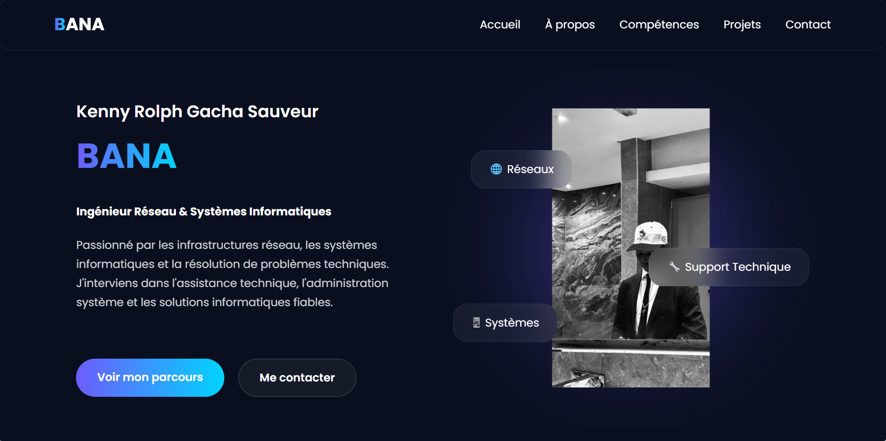
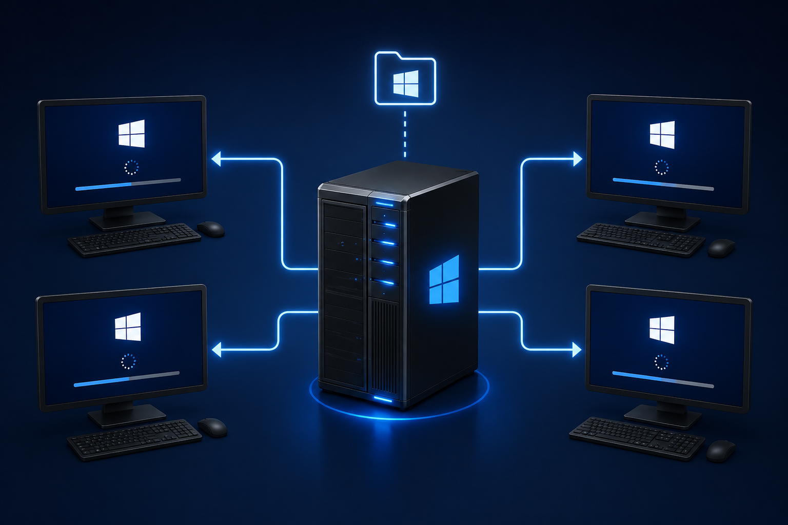

Mes projets
Découvrez mes projets, réalisations et expériences dans différents domaines technologiques.

Site Portfolio
Description
Conception et développement d'un portfolio personnel destiné à présenter mon parcours, mes compétences, mes expériences et mes réalisations professionnelles.
Objectifs
- Créer une présence professionnelle en ligne.
- Valoriser mes compétences techniques.
- Faciliter les prises de contact avec les recruteurs et partenaires.
Technologies utilisées
- HTML5
- CSS3
- JavaScript
- Bootstrap
Fonctionnalités
- Présentation personnelle.
- Affichage des compétences.
- Présentation des projets.
- Formulaire de contact.
- Téléchargement du CV.
Compétences développées
- Développement Front-End.
- Responsive Design.
- Intégration Web.
- Conception d'interfaces utilisateur.
Résultats
Création d'une plateforme professionnelle moderne permettant de présenter efficacement mon profil et mes réalisations.

Infrastructure Active Directory sous Windows-Server 2022
Description
Mise en place d'une infrastructure client-serveur basée sur Windows-Server 2022 permettant l'administration centralisée des utilisateurs, des ordinateurs et des ressources réseau au sein d'un domaine Active Directory.
Objectifs
- Comprendre l'architecture d'un environnement Active Directory.
- Déployer un serveur Windows dans un environnement professionnel.
- Centraliser la gestion des utilisateurs et des postes de travail.
Technologies utilisees
- Windows Server 2022
- Active Directory Domain Services (AD DS)
- DNS
- DHCP
- Windows 10
Compétences développées
- Installation et configuration de Windows Server.
- Création et administration d'un domaine Active Directory.
- Gestion des utilisateurs, groupes et unités d'organisation.
- Configuration des services DNS et DHCP.
- Administration d'un environnement client-serveur.
Résultats
Déploiement d'une infrastructure fonctionnelle permettant l'authentification centralisée des utilisateurs et l'administration des ressources réseau.
Voir le projet
Plateforme de Gestion de Parc Informatique avec GLPI
Description
Projet réalisé dans le cadre d'un mémoire de fin de cycle de Licence en Réseaux Informatiques. Ce travail consistait à étudier, concevoir et déployer une plateforme centralisée de gestion de parc informatique basée sur GLPI, permettant l'inventaire des équipements, la gestion des tickets d'assistance, le suivi des licences logicielles et l'administration des ressources informatiques d'une organisation
Objectifs
- Analyser les besoins d'une infrastructure de gestion de parc informatique.
- Déployer une solution centralisée de gestion des équipements et des incidents.
- Automatiser le suivi des actifs matériels et logiciels.
- Sécuriser l'accès aux données et aux fonctionnalités de la plateforme.
- Améliorer l'efficacité du support informatique grâce à un système de ticketing.
Technologies utilisees
- GLPI 10
- Debian 12
- Apache2
- PHP 8.2 / PHP-FPM
- MariaDB
- VirtualBox
- Windows 10
- Ubuntu
- Windows 7
Compétences développées
- Administration de serveurs Linux (Debian).
- Installation et configuration d'un serveur Web Apache.
- Mise en place et administration d'une base de données MariaDB.
- Déploiement et sécurisation d'une solution GLPI.
- Gestion des utilisateurs, rôles et permissions.
- Configuration d'environnements virtualisés avec VirtualBox.
- Gestion des tickets d'incidents et de l'inventaire informatique.
- Mise en œuvre des bonnes pratiques de sécurité informatique.
Résultats
Le projet a abouti au déploiement d'une plateforme GLPI entièrement fonctionnelle permettant la centralisation de la gestion des équipements informatiques, des utilisateurs et des incidents. La mise en place du système de ticketing a facilité le suivi et le traitement des demandes de support technique, tandis que la configuration des rôles et des permissions a permis de sécuriser l'accès aux différentes fonctionnalités de la plateforme. Les tests réalisés ont confirmé le bon fonctionnement des principales fonctionnalités, notamment l'authentification des utilisateurs, la gestion des tickets, l'inventaire des équipements et le contrôle des droits d'accès. Cette solution a ainsi contribué à améliorer la traçabilité, l'administration et l'efficacité globale de la gestion des ressources informatiques.
Voir le projet
Projet Personnel
Entrepreneuriat & Services Numériques
Description
Création et gestion de BJServices, une activité indépendante proposant divers services numériques destinés aux particuliers.
Objectifs
- Développer une activité génératrice de revenus.
- Acquérir une expérience concrète en gestion d'entreprise.
- Développer des compétences commerciales et organisationnelles.
Responsabilités
- Gestion des clients.
- Gestion des prestations de services.
- Communication digitale.
- Élaboration de procédures et documents administratifs.
- Gestion des opérations quotidiennes.
Compétences développées
- Relation client.
- Gestion de projet.
- Négociation commerciale.
- Organisation et planification.
- Communication professionnelle.
Résultats
Développement d'une activité entrepreneuriale permettant de mettre en pratique des compétences en gestion, communication et service client.
10+
Projets réalisés
5+
Technologies
100%
Engagement